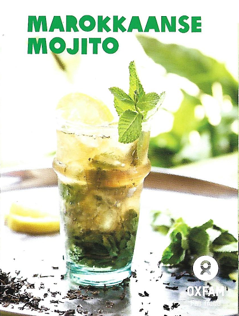
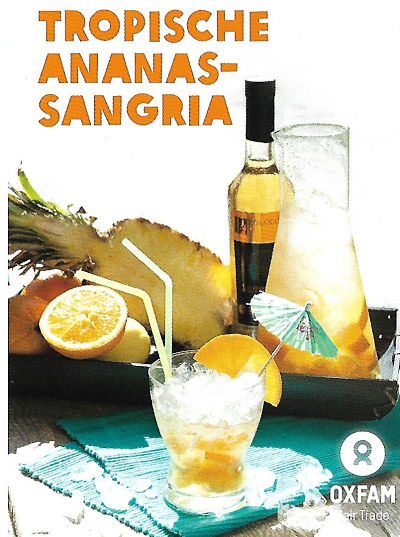

Recipes
Here you can find a small taste of the many recipes you can make at home using Oxfam Fair Trade products. You can find many more on the Oxfam website (dutch)
Use these recipes, here or from the Oxfam site, for your next party or event. Be sure to check out our groups page, if you're interested in ordering by consignment.

Maroccan Mojito
Time: 30 minutes
For 4 portions
Instructions
Place the loose tea and the crushed cardemom pods in a teapot and pour over 200ml of boiling water. Let the tea steep for 15 minutes. Remove the tea and the pods and let cool.
Crush 3/4 of the fresh mint, together with the sugar. Add the lemon and lime juice so that the sugar dissolves.
Add the tea to the mint mixture, stir well, and sift. Add white and dark rum, and then the rose water.
Fill four glasses with ice and the remaining mint leaves. Divide the cocktail over the four glasses and add sparkling water until full.

Tropic Pineapple-Sangria
Time: 30 minutes + 3 hours rest
For 4 portions
Instructions
Combine all the ingredients together, excluding the sparkling water. Let rest in the fridge for at least 3 hours. Serve with ice and optionally some sparkling water.